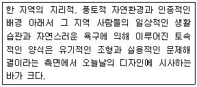
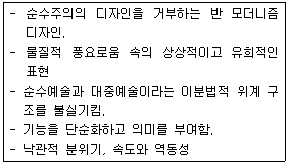
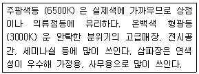

컬러리스트산업기사 (2011-03-20 기출문제)
1과목: 색채심리
1. 서구문화권의 영향을 받는 대부분의 국가에서 성인의 절반 이상이 가장 선호하는 색은?
- 청색
- 적색
- 흰색
- 흑색
(정답률: 알수없음)

2. 파란색은 ( )을 연상시키며, 요하네스 잇텐에 의하면, ( )은 편함과 안정을 대변하고 정신성을 상징한다. ( )안에 알맞은 것은?
- 수직선
- 수평선
- 원
- 삼각형
(정답률: 알수없음)
3. 항구도시의 백색, 독일 라인 강변의 붉은 지붕색 등은 무엇을 대표하는 색인가?
- 풍토색
- 지역색
- 민족색
- 기억색
(정답률: 알수없음)
4. 코퍼레이트 컬러(coporate color) 란?
- 전통적인 색이라는 의미로 민족적인 또는 국가적인 배경의 이미지를 주는 색이다.
- 기업이 커뮤니케이션 활동 속에서 기업의 아이덴티티를 소구하기 위한 고유의 색이다.
- 일반적으로 배색의 대상이 되는 부위에서 가장 넓은 면적의 부분을 차지하는 색이다.
- 전체 색조에 긴장감을 주거나 시선을 집중시키는 효과가 있다.
(정답률: 알수없음)
5. 비콜로 배색에 대한 설명으로 틀린 것은?
- 비콜로란 바이컬러(Bocolor) 와 같은 의미이다.
- 텍스타일의 배색에서 대중적인 배색을 말한다.
- 소대의 바탕색을 베이스로 하고 한 색을 무늬색으로 프린트 한 경우이다.
- 프랑스 국기가 대표적인 예이다.
(정답률: 알수없음)
6. 환경색채를 형성하는 요인이 아닌 것은?
- 자생식물
- 지역역사
- 진입교통
- 자연기후
(정답률: 알수없음)
7. 다음 중 차갑고 투명한 느낌을 주어 미래나 내세의 이미지를 연상시키는 색채는?
- 5YR 5/5
- 2.5BG 5/10
- 2.5PB 4/10
- 5RP 5/5
(정답률: 알수없음)
8. 사회 문화 정보로서 색이 활용된 예로 2002한일 월드컵에서 붉은 악마 응원단의 빨간색은 다음 중 어떤 역할에 가장 크게 기여 하였는가?
- 국제적 표준색의 기능
- 사용자의 편의성
- 유대감의 형성과 감정의 고조
- 차별적인 연상효과
(정답률: 알수없음)
9. 프랑스 색채 연구가 모리스가 제시한 색채와 맛과의 관계가 틀린 것은?
- 단맛 - white
- 짠맛 - grey
- 신맛 - yellow
- 쓴맛 - olive green
(정답률: 알수없음)
10. 괴테의 색채론에서 시민과 노동자를 상징하는 색채를 차례로 나열한 것은?
- 파랑, 녹색
- 녹색, 파랑
- 주황, 녹색
- 주황, 파랑
(정답률: 알수없음)
11. 강조색의 설명으로 옳은 것은?
- 전체 50% 이상의 색으로 전체적인 느낌을 전달한다.
- 전체 25% 정도의 색으로 변화를 주는 역할을 담당한다.
- 전체 색채효과를 좌우한다.
- 전체 5% 정도를 명도나 채도에 의해 변화를 주는 방법을 말한다.
(정답률: 알수없음)
12. 색채의 상징에 관한 내용 중 틀린 것은?
- 올림픽마크의 5색은 5대륙의 상징성을 가진 컬러심벌이다.
- 중국에서는 방위의 구분에 색을 사용하였는데, 청색은 동쪽의 색이다.
- 색의 상징으로 등급을 구분하거나 방위, 분류 등을 하는 데 사용하기도 한다.
- 조선지대에도 색으로 등급을 구분하였는데, 정1품에서 저3품까지 청색의 옷을 입었다.
(정답률: 알수없음)
13. 다음 중 동일색상에서 톤의 차를 강조한 배색에 해당하는 것은?
- 분홍 + 하늘색
- 분홍색 + 남색
- 하늘색 + 남색
- 남색 + 흑갈색
(정답률: 알수없음)
14. 다음 중 가장 온도감이 낮은 색채는?
- 5B 6/10
- 2.5G 5/6
- 7.5YR 5/10
- N9
(정답률: 알수없음)
15. 색채를 조절할 때 적합하지 않은 것은?
- 공장이나 사무실의 천장은 바닥재의 색보다 밝은 색이 적합하다.
- 상품 진열장의 바탕색을 밝은 오렌지색으로 하면 모든 색채가 돋보인다.
- 시선을 끌어 판매량을 높이는 상점의 색은 밝은 노란색을 사용하면 좋다.
- 수술실 환경색을 백색에서 청록색으로 바꿔 현기증, 졸도현상을 해소한다.
(정답률: 알수없음)
16. 색채조절의 영향과 거리가 먼 것은?
- 생활의욕을 상승시킨다.
- 선호색 사용으로 쾌적하다.
- 조명의 효율을 높인다.
- 작업의 안정성을 높인다.
(정답률: 알수없음)
17. 보편적으로 이해되는 공감각적 연결이 적절한 것은?
- 꽃(floral) 향 - 분홍
- 시원한 음료수 포장 - 빨강
- 부드러운 감촉 - 검정
- 민트(mint)향 - 노랑
(정답률: 알수없음)
18. 다음 중 유목성을 높이는 방법으로 옳은 것은?
- 밝은 색보다는 어두운 색을 선택한다.
- 바탕색에 비하여 채도를 높게 한다.
- 일상적으로 흥한 색을 선택하다.
- 따뜻한 색보다는 차가운 색을 선택한다.
(정답률: 알수없음)
19. 색채 선호에 관한 설명 중 틀린 것은?
- 일반적으로 열대지역에서는 난색계열의 색이 선호된다.
- 연령이 낮을수록 원색계열과 밝은 톤을 선호하는 경향이 있다.
- 아기들이 단파장 영역의 색상을 선호한다.
- 선호색은 사회· 문화적 영향을 받는다.
(정답률: 알수없음)
20. 색채조절을 이용한 색채 계획의 설명으로 적합하지 않은 것은?
- 북향,서향의 방에는 따뜻한 색 계통을 사용하면 좋다.
- 백색, 회색, 흑색은 백색을 위에 놓고 바라보면 불안하지만 흑색을 위로하면 안정감이 있다.
- 따뜻한 느낌을 주는 색은 다가오는 듯 크게 보인다.
- 지나치게 낮은 천장에 차가운 색을 칠하면 처장이 높아 보인다.
(정답률: 알수없음)
2과목: 색채디자인
21. 다음 중 2차원 디자인으로만 나열된 것은?
- TV디자인, CF 디자인, 애니메이션디자인
- 그래픽디자인, 심벌디자인, 타이포그래피
- 액세서리디자인, 공예디자인, 인테리어디자인
- 익스테리어디자인, 애니메이션디자인, 무대디자인
(정답률: 알수없음)
22. 색채계획을 함에 있어 색채를 적용할 대상을 검토할 때 고려조건으로 거리가 먼 것은?
- 대상이 차지하는 면적
- 대상의 움직임 여부
- 경제 조건
- 조명조건
(정답률: 알수없음)
23. 다음 중 주거 공간 색채에 대한 설명으로 틀린 것은?
- 거실은 가족의 공유 공간 이므로 특수한 색채는 어울리지 않는다.
- 천장, 벽, 마루, 가구 등의 색채는 가급적 심리적 자극을 적게 주도록 저채도색을 주조색으로 한다.
- 커튼, 카펫, 인테리어 소품 등은 액센트 색으로 효과를 기대하는 색채에 고채도 색을 사용한다.
- 방들은 개인 공간이므로 베이지나 브라운의 저채도색을 사용한다.
(정답률: 알수없음)
24. 색채연구가들은 21세기의 대적 색채를 청색으로 꼽았다. 청색은 투명하고, 깊이가 있는 디지털 패러다임의 대표색이 되었다. 이것은 색채마케팅 전략의 영향요인 중 어느 요인에 해당되는가 ?
- 경제적 환경
- 기술적 환경
- 문화적 환경
- 자연적 환경
(정답률: 알수없음)
25. 다음의 내용과 가장 관계 깊은 내용의 디자인은?

- 생태학적 디자인(ecological design)
- 버네큘러 디자인(vernacular design)
- 그린 디자인(green design)
- 환경적 디자인(environmental design)
(정답률: 알수없음)
26. 기업의 내· 외부 환경을 분석하여 마케팅 전략을 수립해야 하는 SWOT분석의 항목 중 자사 제품과 기업내부를 분석해야 하는 항목으로 짝지어진 것은?
- 강점, 위협
- 기술환경적
- 환경문화적
- 환경친화적
(정답률: 알수없음)
27. 디자인의 원리에 대한 설명으로 틀린 것은?
- 대비는 시각적 힘의 강약에 의한 힘의 감정효과이다.
- 비대칭은 형태상으로 불균형이지만, 시각상의 힘 정도에 정동에 의하여 균형이 잡인다.
- 등비수열에 희한 비례는 4:7:10:13:... 과 같이 이웃하는 의하여 두 항의 차이가 일정한 수업에 의한 비례이다.
- 강조는 단조로움을 덜거나 규칙성을 깨뜨릴 때, 관심의 초점을 만들 때 이용하면 효과적이다.
(정답률: 알수없음)
28. 데 스틸(De Still)에 관한 설명 중 틀린 것은?
- 개성을 배제한 주지주의적 추상 미술운동
- 인간의 정신 속에서 경감을 찾는 순수조형이론
- 검정, 회색, 녹색, 갈색, 주황 등의 강한 색조를 사용
- 건축, 산업디자인, 타이포그래피 등에 영향을 줌
(정답률: 알수없음)
29. 다음 그림이 나타내는 것은?
- 방향의 착시
- 논리적 법칙
- 명암의 착시
- 길이의 착시
(정답률: 알수없음)
30. 소비자가 개인적인 제품을 구매하고 결정하는데 가장 명향을 많이 주는 대상은?
- 한 가지 목적을 가지고 모이는 희구집단
- 개인의 취향과 의경에 영향을 주는 대면집단
- 가정의 경제력을 가진 결정권자
- 사회계급이 같은 계층의 집단
(정답률: 알수없음)
31. 다음이 설명하는 미술사조는?

- 다다이즘
- 추상표현 주의
- 팜아트
- 옵아트
(정답률: 알수없음)
32. 제품의 색채 디자인에 있어서 색채 선정시 사용 면적과 주요 사용 목적에 따라 사용할 색을 세 종류로 분류한 것으로 옳은 것은?
- 주조색, 보조색, 강조색
- 주요색, 보조색, 강한색
- 주조색, 보강색, 강조색
- 주조색, 보조색, 강한색
(정답률: 알수없음)
33. 메이크업의 3대 관찰요소가 아닌 것은 ?
- 배분(Proportion)
- 배치(Position)
- 입체(Dimension)
- 색상(Color)
(정답률: 알수없음)
34. 서로 달라서 일견 관련이 없는 요소를 결합시킨다는 의미로 공통의 유사점, 관련성을 찾아내고 동시에 아주 새로운 사고방법으로 2개의 것을 1개로 조립하는 것을 목표로 하는 이미지 전개 방법은?
- 브레인스토밍
- 시네틱스
- 입출력법
- 체크리스트법
(정답률: 알수없음)
35. 샤넬라인(Chanel Line) 에 대한 설명으로 틀린 것은?
- 직선적 실루엣을 이루는 스커트
- 유행에 따라 좌우되지 않는 길이라는 의미
- 무름에서 20cm위의 스커트 길이
- 시대와 연령을 초월하여 누구에게나 어울리는 선
(정답률: 알수없음)
36. 디자인의 기본 요소에 대한 설명으로 옳은 것은?
- “적극적인 선” 이란 선의 밀집이나 선의 집합, 입체화된 점이나 선에 의해서도 성립된다.
- “소극적인 선” 이란 사실상의 선은 없지만 두 요소 사이의 심리적으로 연결된 선이다.
- “소극적인 면(negative plane)” 은 점과 점으로 이어지는 선이다.
- “적극적인 면(positive plane)” 은 점의 확대, 선의 이동, 너비의 확대 등에 의해 성립된다.
(정답률: 알수없음)
37. 디자인 역사에 대한 설명 중 잘못된 것은?
- 구석기 시대에는 대개 주술적 또는 종교적 목적의 디자인이라 아름다움과 실용성을 강조하지 않았다.
- 18세기 영국에서 일어난 산업혁명은 기계혁명이자 생산혁명인 동시에 디자인 혁명 이었다.
- 중세말 이탈리아에서 도시경제가 번영하게 되자 자연과 인간에 대한 사고방식이 바뀌었는데, 이를 고전문예의 부흥이라는 의미에서 르네상스라 불렀다.
- 중세 유럽문화는 크리스트교를 중심으로 하여 교회와 수도원이 그 중심에 있었고, 인간성에 대한 이해나 개성의 창조력이 뛰어났다.
(정답률: 알수없음)
38. 일러스트레이션(Illustration) 에 관한 설명 중 틀린 것은?
- 회회, 사진, 도표, 도형 등 문자이외의 그림요소이다.
- 주제를 명확하게 시각화하는 것이다.
- 커뮤니케이션 언어로서 독자적인 장르이다.
- 출판디자인, 북 디자인이라고도 불린다.
(정답률: 알수없음)
39. 제품 디자인의 색채계획과 관계가 없는 것은?
- 단일 소재의 재질 안에서 주조색을 정하고 배색을 결정한다.
- 심미성과 조형성에 관계된다.
- 광고, 포장, 디스플레이까지 색채가 연계되어야 한다.
- 배색시 색채 이미지스케일이나 색채 감성언어 팔레트를 사용한다.
(정답률: 알수없음)
40. 마케팅 자극(4P) 에 해당하지 않는 것은?
- 제품(Product)
- 가격(Price)
- 유통구조(Place)
- 선전(Propaganda)
(정답률: 알수없음)
3과목: 섹채관리
41. 2,3 차원 공간에 선, 네모, 원 등의 그래픽 형상을 수학적 표현을 통해 나타내는 색채영상은?
- 벡터그래픽 영상
- 포스트스크립트
- 오버프린트
- 래스터 영상
(정답률: 알수없음)
42. 다음 중 육안으로 색을 비교할 경우 관찰자는 누가 가장 좋은가?
- 20대 여성
- 40대 여성
- 30대 남성
- 50대 남성
(정답률: 알수없음)
43. 다음의 설명은 어떤 종류의 조명에 대한 것인가?

- 고압방전등
- 저압방전등
- 할로겐등
- 백열등
(정답률: 알수없음)
44. 우리나라에서 전통적으로 사용하는 천연염료의 하나로, 방충성이 있으며, 이 즙을 피부에 필하면 세포에 산소 공급이 촉진되어 혈액의 순환을 좋게 하는 치료제로 알려지는 것은?
- 자초 염료
- 소목 염료
- 치자 염료
- 홍화 염료
(정답률: 알수없음)
45. 비트맵 영상에 대한 설명으로 잘못된 것은?
- 래스터 영상이라고도 한다.
- 화면의 모든 화소 데이터가 저장되어 있다.
- 화소 간의 관계식이 저장되어 있다.
- 화소들은 비트맵이라고 하는 격자 상에 위치한다.
(정답률: 알수없음)
46. CMYK로 인쇄도니 잡지의 인쇄 강도를 측정하고자 할 때 사용하는 측색기는?
- 스펙트로포토미터(Spectrophotometer)
- 크로마미터(Chromameter)
- 덴시토미터(Densitometer)
- 글로스미터(Glossmeter)
(정답률: 알수없음)
47. 다음 중 CCM 프로그램과 관계 없는 것은?
- 컬러런트 재활용
- 배색기능
- Quality Cintrol
- 효과적 원색 조합
(정답률: 알수없음)
48. 다음 중 X10Y10Z10에서 숫자 10이 의미하는 것은?
- 10회 측정 평균치
- 10˚ 시야 측정치
- 측정 횟수
- 표준 광원의 종류
(정답률: 50%)
49. 다음 중 색채 오차 표기로 사용되지 않는 것은?
- ⊿E*ab
- CMC
- ⊿E*dh
- CIE2000
(정답률: 알수없음)
50. 색채 규격 중 안전색에 해당하는 용도가 아닌 것은?
- 위장복
- 교통안전표지판
- 해상 구명복
- 안전 표지판
(정답률: 알수없음)
51. 광원이 내는 빛의 총 에너지 측정량을 나타내는 것은?
- 전광속
- 조도
- 광도
- 휘도
(정답률: 알수없음)
52. 다음 중 색채관리에 대한 설명으로 옳은 것은?
- 색채계를 사용하여 색채 관리를 보다 객관적이고 과학적으로 한다.
- 색채관리의 정밀성은 목적한 색채를 얼마나 빠르게 맞추는가의 문제이다.
- 색채관리의 정확성은 똑같은 조건에서 얼마나 비슷한 색을 구현하는가 하는 척도이다.
- 정밀한 색채관리가 필요할 때는 표준색 이름을 활용한다.
(정답률: 알수없음)
53. 화학적 성분은 스틸벤 이미다졸 쿠마린유도체 등이며, 소량만 사용해야 하고, 어느 한도량을 넘으면 백색도가 줄고 청색이 되어 버리는 염료는?
- 식용 염료
- 합성 염료
- 천연 염료
- 형광 염료
(정답률: 알수없음)
54. 디치컬 색채에 대한 설명 중 옳은 것은?
- 디지털 색채의 기본색은 시안(cyan), 마젠타(magenta), 블랙(black) 이다.
- 디지털 색채 영상을 구정하는 최소 단위는 픽처(picture) 이다.
- 해상도는 모니터의 크기가 커질수록 선명도가 떨어진다.
- 24비트로 된 한 화소가 나타낼 수 있는 색상의 종류는 1,572,864(=256*256*24) 이다.
(정답률: 알수없음)
55. 색역(gamut) 이 넓은 순으로 옳은 것은?
- CIELAB ＞ CMYK ＞ RGB
- RGB ＞ CIELAB ＞ CMYK
- CIELAB ＞ RGB ＞ CMYK
- CMYK ＞ RGB ＞ CIELAB
(정답률: 알수없음)
56. 물체의 색을 측정하는 방법으로 CIE 가 추천한 것이 아닌것은?
- 48/0
- 0/45
- 0/d
- 45/d
(정답률: 알수없음)
57. 다음 중 반사율이 파장에 관계없이 높기 때문에 거울로 사용하기에 적합한 금속은?
- 금
- 구리
- 알루미늄
- 은
(정답률: 알수없음)
58. 필터식 방식이나 분광식 방식의 모든 색채계에 색채측정의 기준으로 사용되는 것은?
- 백색 기준물
- 회색 기준물
- 녹색 기준물
- 적색 기준물
(정답률: 알수없음)
59. MI(Metamerism Indec) 의 광원으로 사용하지 않는 것은?
- 표준광A
- 표준광 D65
- 표준광C
- 표준광 B
(정답률: 알수없음)
60. 색의 혼합에 대한 설명 중 의미하는 것이 나머지 셋과 다른 하나는?
- 그리스만의 법칙
- 베버와 페히너의 법칙
- 애덤스- 니커슨의 색차식
- 쿠벨카 문크 이론
(정답률: 알수없음)
4과목: 색채지각의이해
61. 다음 중 명시성이 가장 높은 배색은?
- 파랑 바탕에 주황 선
- 빨강 바탕에 노란 선
- 빨강 바탕에 초록 선
- 검정 바탕에 노란 선
(정답률: 알수없음)
62. 다음 중 헤링의 심리 4원색을 바르게 나타낸 것은?
- 빨간색, 녹색, 파란색, 노란색
- 빨간색, 주황색, 파란색, 노란색
- 녹색, 청록색, 주황색, 빨간색
- 빨간색, 파란색, 보라색, 노란색
(정답률: 알수없음)
63. 두 개 이상의 색광이나 색료를 서로 혼합하여 다른 색채감각을 일으키는 것은?
- 색의 동화
- 색의 잔상
- 색의 대비
- 색의 혼합
(정답률: 알수없음)
64. 어느 색을 검은 바탕 위에 놓았을 때 밝게 보이고, 흰 바탕 위에 놓았을 때 어둡게 보이는 것과 관련된 현상은?
- 동시 대비
- 명도 대비
- 색상 대비
- 채도 대비
(정답률: 알수없음)
65. 색상의 차이가 커도 명도 차이가 작으면 색의 차이가 쉽게 인식되지 않는 것과 관련한 효과(현상)는?
- 주관색 현상
- 에렌슈타인 효과
- 리프만 효과
- 네온컬러 효과
(정답률: 알수없음)
66. 의료공간인 수술실의 주조색은 청록색이 바람직하다고 한다. 이것은 수술하는 의료진들에게 어지러움을 방지하고 눈을 현안하게 해주기 위한 것인데 다음 내용 중 가장 밀접한 연관성이 있는 것은?
- 대비
- 동화
- 잔상
- 흥분
(정답률: 알수없음)
67. 다음 중 빛의 특성에 대한 설명으로 틀린 것은?
- 파장이 긴 쪽이 붉은색으로 보이고 파장이 짧은 쪽이 푸른색으로 보인다.
- 햇빛과 같이 모든 파장이 유사한 강도를 갖는 빛을 백색광이라 한다.
- 백열전구(텅스텐빛)는 장파장에 비하여 단파장이 상대적으로 강하다.
- 회색으로 보이는 물체는 백색광 전체의 일률적인 빛의 감소에 의해서이다.
(정답률: 알수없음)
68. 다음 중 중성색이 아닌 것은?
- 주황
- 자주
- 보라
- 연두
(정답률: 알수없음)
69. 진출색에 대한 설명으로 틀린 것은?
- 따뜻한 색보다 차가운 색이 더 진출하는 느낌을 준다.
- 어두운 색보다 밝은 색이 더 진출하는 느낌을 준다.
- 저채도의 색보다 고채도의 색이 더 진출하는 느낌을 준다.
- 무채색보다 유색색이 더 진출하는 느낌을 준다.
(정답률: 알수없음)
70. 잔상에 대한 설명 중 틀린 것은?
- 시신경의 흥분으로 잔상이 나타난다.
- 물체색의 잔상은 대부분 보색잔상으로 나타난다.
- 실미보색의 반대색은 잔상의 결과가 뚜렷이 나타난다.
- 양성잔상을 이용하여 수술실의 색채예획을 한다.
(정답률: 알수없음)
71. 색상 대비에 대한 성명으로 옳은 것은?
- 적색을 본 후 황색을 보게 되면 황색은 연두색에 가까워 보인다.
- 스테인드글라스와 우리나라의 전통적인 색동옷 등에서 볼 수 있다.
- 빨강과 파랑의 대비는 빨강을 더욱 따뜻하게, 파랑을 더욱 차게 느끼게 한다.
- 줄무늬와 같이 주위 색의 영향으로 인접색에 가까워지는 현상이다.
(정답률: 알수없음)
72. 다음 중 애브니 효과 (Abney Effevt) 에 대한 설명은?
- 흰색 배경에 검정색 격자무늬로서 격자의 교차점에 흰색 점이 지각되는 현상
- 색자극의 순도가 달라지면 지각되는 색의 밝기가 변하는 현상
- 색자극의 밝기가 달라지면 그 생상이 다르게 보이는 현상
- 파장이 같아도 색의 순도가 변함에 따라 그 색상이 변화하는 현상
(정답률: 알수없음)
73. 보색에 대한 설명으로 틀린 것은?
- 물리보색과 심리보색은 항상 일지차지 않는다.
- 색료의 1차색은 색광의 2차색과 보색관계이다.
- 혼합하여 무채색이 되는 색들은 보색관계이다.
- 보색이 아닌 색을 혼합하면 중간색이 나온다.
(정답률: 알수없음)
74. 감법혼색의 혼합원리를 옳게 설명한 것은?
- Cyan + Yellow = Red
- Magenta + Cyan = Blue
- Yellow + Magenta = Cyan
- Blue + Yellow = Cyan
(정답률: 알수없음)
75. 가시광선에 대한 설명으로 틀린 것은?
- 빛은 파장에 따라 굴절률이 다르다.
- 스펙트럼의 파란색이 인간의 눈에 가장 선명하고 밝게 느껴진다.
- 빛은 파장에 따라서 서로 다른 색감을 일으킨다.
- 색의 띠를 프리즘을 이용하여 합치면 백색광을 얻을 수 있다.
(정답률: 알수없음)
76. 같은 조건의 명도와 채도를 가진 다은의 색 중 어느 색이 가장 후퇴되어 보이는가?
- 빨강
- 노랑
- 녹색
- 파랑
(정답률: 알수없음)
77. 하얀 눈이나 검은 우산과 같은 무채색만 지각할 수 있는 것은?
- 간상체
- 수정체
- 유리체
- 추상체
(정답률: 알수없음)
78. 다음 중 동화 효과와 관련이 없는 것은?
- 베졸트 현상
- 줄눈 효과
- 음성 잔상
- 전파 효과
(정답률: 알수없음)
79. 회전 혼합의 설명 중 틀린 것은?
- 맥스웰의 혼색원리에 이용되었다.
- 색들의 면적이 매우작고, 먼 거리에서 관찰할 때 면적비에 따른 중간색으로 지각된다.
- 혼색된 결과는 밝기와 색에 있어서 원래 각 색지각의 평균값으로 나타난다.
- 색팽이를 통해 쉽게 실험 해 볼 수 있다.
(정답률: 알수없음)
80. 평면색(Film Color) 에 대한 설명으로 옳은 것은?
- 거리감이 불확실하고 입체감이 없는 색으로, 미적으로 본다면 부드럽고 쾌감이 있는 색
- 사물의 질감이나 상태를 나타내는 색으로 거의 불투명도를 가진 물체의 표면에서 느낄 수 있는 색
- 투명한 착색액이 투명유리에 들어 있는 것을 봉 때처럼 색의 존재감이 그 내부에서도 느껴지는 용적 색
- 거울과 같이 광택이 나는 불투명한 물질의 표면에 나타나는 완전 반사에 가까운색
(정답률: 알수없음)
5과목: 색채체계의이해
81. 관용색명에 대한 설명 중 틀린 것은?
- 생활하면서 필요로 하는 식물, 동물, 광물 등의 이름을 따서 붙여진 것이다.
- 시대, 장소에 따른 유행색이나 문화적인 면에서 붙여진 이름이다.
- 예로부터 사용해 온 빨강, 노랑 등의 고유색명이 포함된다.
- 기본색명에 색의 3속성에 따른 수식어를 붙여 표현하는 방법이다.
(정답률: 알수없음)
82. 다음 중 녹색 정도를 가장 많이 포함하고 있는 색?
- L * = 45, a * = 40, b * = -15
- L * = 70, c * = 15, b * = 270
- L * = 35, a * = -40, b * = 15
- L * = 70, C * = 25, h = 90
(정답률: 알수없음)
83. 독일산업규격으로 채용된 색체계로 올바른 것은 ?
- DIN
- NCS
- Munsell
- OSA
(정답률: 알수없음)
84. 다음 중 먼셀(Munsell) 3속성에 의한 표시 기호인 2.5Y 5/4에 가장 적합한 관용 색명은?
- 개나리색 (Chrome Yellow)
- 세피아 (Sepia)
- 황토색 (Yellow Ochre)
- 카키색 (Khaki)
(정답률: 알수없음)
85. 쉐브럴의 색채조화이론에 관한 설명으로 옳은 것은?
- 개직물의 혼색에서 보여주는 병치 혼색의 개념을 제시하여 인상파 화가들에게 영향을 주었다.
- 질서의 원리ㅡ 친밀성의 원리, 유사의 원리, 비모호성의 원리로써 색채 조화론을 제시하였다.
- 색삼각형내에서 7개의 범주(color, tint, tone, shade, gray, white, black) 에 의한 조화의 이론을 제시하였다.
- 조화(동등, 유사, 대비)와 부조화(제 1 불명료, 제 2 불명료, 눈부심)의 범위를 제시
(정답률: 알수없음)
86. 19⑤년 미국의 화가이자 색채연구자인 먼셀이 색의 체계를 정립하는데 사용한 기본 색상 수는?
- 3
- 4
- 10
- 20
(정답률: 알수없음)
87. 다음 중 국제적인 색채표준으로 인정되고 있는 색채체계는?
- NCS 색체계
- CMYK 색체계
- RGB 색채계
- 비렌의 색체계
(정답률: 알수없음)
88. 문· 스펜서 색채조화론 설명에 해당하지 않는 것은?
- 오메가 공간을 설정
- 먼셀 색체계의 H, V, C 의 단위로 설명
- 정성적인 색채조화론
- 미도(美)의 개념을 적용
(정답률: 알수없음)
89. 4⑤0-830G 에 대한 설명으로 옳은 것은?
- 백색도 40%, 흑색도 50%, 30%의 녹색도를 지닌 파란색
- 흑색도 40%, 순색도 50%, 30%의 녹색도를 지닌 파란색
- 순색도 40%, 흑색도 50%, 30%의 파란색도를 지닌 녹색
- 흑색도 40%, 순색도 50%, 30%의 파란색도를 지닌 녹색
(정답률: 46%)
90. L*a*b* 색공간에서 a*b* 는 색도좌표계를 의미한다. 이 a*b* 의 설명 중 틀린 것은?
- 색도좌표계의 중앙은 무색이다.
- +a*는 빨강 방향이고, -a* 는 녹색 방향을 나타낸다.
- +b*는 파랑 방향이고, -b* 는 노랑 방향을 나타낸다.
- a*와 b* 값이 커지는 것은 포화도가 높아지는 것이다.
(정답률: 알수없음)
91. 오방색의 방위와 색의 연결이 옳은 것은?
- 동 - 백, 서 - 청
- 남 - 흑, 북 - 적
- 동 - 청, 중앙 - 황
- 북 - 적, 서 - 백
(정답률: 알수없음)
92. 다음 중 10YR 과 색상의 차이가 가장 가까운 것은?
- 1R
- 10R
- 1Y
- 10Y
(정답률: 알수없음)
93. 다음 중 표현색 수가 가장 많은 색체계는?
- 오스트발트 색체계
- CIE XYZ 색체계
- 먼셀 색체계
- NCS 색체계
(정답률: 알수없음)
94. 우리나라에서 색채교융용으로 채택하고 있는 표준 색체계는?
- 먼셀 색체계
- PANTON 색체계
- P. C. C. S. 색체계
- NCS 색체계
(정답률: 알수없음)
95. 톤(tone) 분류를 방탕으로 하는 색이름의 특성에 관한 설명중 틀린 것은?
- 색채의 3속성에 의한 방법보다 색채조화를 훨씬 수월하게 처리할 수 있다.
- 톤 분류법에 의해 색이름을 알게 하면 색채를 쉽게 기억할 수 있다.
- 우리의 일상적인 감각과 어울려 이미지 반영이 용이하다.
- 색의 이미지를 정량화 하여 색상의 고유특성을 부각 시킬 수 있다.
(정답률: 알수없음)
96. Yxy 색체계의 색을 표시하는 색도도에 대한 설명으로 틀린것은?
- Red 부분의 색공간이 가장 크고 동일 색채 영역이 넓다.
- 백색광은 색도도의 중앙에 위치한다.
- 색도도 안의 한 점은 혼합색을 나타낸다.
- 말발굽형의 바깥 둘레에 나타난 모든 색은 고유 스펙트럼을 가지고 있다.
(정답률: 알수없음)
97. 비렌의 색채 조화의 예가 틀린 것은?
- tint - tone - shade
- color - shade - white
- color - white - black
- white - tint - color
(정답률: 알수없음)
98. NCS 색체계의 설명으로 틀린 것은?
- 심리적인 비율척도를 사용해 색 지각량을 표로 나타내었다.
- 기본개념은 영 헬름홈cm의 '색에 대한 감정의 자연적 시스템' 을 채택하였다.
- 흰색성, 검은색성, 노란색성, 빨간색성, 파란색성, 녹색성의 6가지 기본 속성을 가지고 있다.
- 인테리어나 외부 환경 디자인에 적합한 색체계이다.
(정답률: 알수없음)
99. ISCC-NIST 의 계통색명 표기방법 중 톤의 기호로서 명도채도가 가장 낮은 것에 해당하는 것은?
- moderate
- deep
- strong
- dark
(정답률: 알수없음)
100. 색채 표준화의 기본적인 조건에 해당하지 않는 것은?
- 색채 속성배열의 과학적 근거
- 색채의 속성(색상, 명도, 채도)표기
- 색채간 지각적 등보성
- 특수 안료의 사용
(정답률: 알수없음)